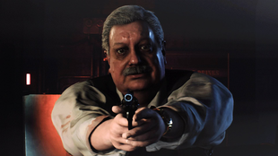

เรื่องราวก่อนเกิดเหตุการณ์ภายในเกม
ปี 1900-1989 จุดเริ่มต้น Umbrella Corporation
ปี 1900

Stairway to the Sun
เฮนรี่ ทาวิส (Henry Travis) นักสำรวจและผู้ร่วมก่อตั้งบริษัท The Travis Company ค้นพบ Stairway to the Sun ดอกไม้ที่สามารถผลิตไวรัสProgeniter ในถ้ำแห่งหนึ่งของชนเผ่าพื้นเมือง Ndipaya ในแอฟริกาใต้
ปี 1950
ด็อกเตอร์ เจมส์ มาคัส (Dr. James Marcus) กับ ลอร์ด ออสเวล อี สเปนเซอร์ (Lord Ozwell E. Spencer) ได้ค้นพบเชื้อไวรัสต้นแบบ Progeniter โดยสกัดได้จากดอกไม้ “Stairway to the Sun”
ปี1960
ลอร์ด สเปนเซอร์ทำการทดลองหามนุษย์ที่มีสามารถเข้ากันกับตัวไวรัส Progeniter ที่กำลังจะทำในอีก 4 ปีข้างหน้า โดยมีจุดหมายในการสร้างยอดมนุษย์ โดยมีชื่อโครงงานวิจัยว่า Project Wesker (Wesker Children) โดยผู้รอดชีวิตจากโครงการดังกล่าวได้แก่ Albert Wesker และ Alex Wesker
ปี 1962
ลอร์ด สเปนเซอร์ได้ว่าจ้างให้สถาปนิก จอร์ช เทรเวอร์ (George Trevor) ออกแบบและการก่อสร้างคฤหาสน์สเปนเซอร์
ปี 1966


Sir Edward Ashford | Lord Ozwell E. Spencer | Dr. James Marcus
กลุ่มนักวิจัย นำโดย เซอร์ เอ็ดเวิร์ด แอชฟอร์ด (Sir Edward Ashford), ลอร์ด ออสเวล อี สเปนเซอร์และ ดร. เจมส์ มาคัส ได้นำเอาดอกไม้ไปค้นคว้าเพิ่มเติมในเดือนมีนาคม ดร.เจมส์หลงใหลในการรวมยีนส์ของสิ่งมีชีวิตเข้ากับไวรัสProgenitor แต่ลอร์ดสเปนเซอร์ เขาหวังจะสร้างอาวุธชีวภาพที่สามารถควบคุมได้
ผลการทดลองแสดงให้เห็นว่า
- ในสัตว์ที่ไม่ได้เลี้ยงลูกด้วยนม ไวรัสจะทำให้สัตว์มีความก้าวร้าวมากขึ้นและการเจริญเติบโตอย่างรวดเร็ว
- ในสัตว์เลี้ยงลูกด้วยนม สัตว์จะมีการแสดงคุณสมบัติใหม่ๆออกมา
ดร.เจมส์จึงพยายามหาสิ่งที่ทำให้เกิดการสั่งการในระบบ ประสาท เพื่อป้อนข้อมูลลงไป แต่ผลที่ได้ออกมาไม่เป็นที่น่าพอใจ เนื่องจากมีขีดจำกัดของตัวเทคโนโลยีในยุค 60 กับ การที่ไวรัสProgenitorยังไม่เคยมีการทดลองกับมนุษย์เลย
ปี 1967

Lisa Trevor
พวกเขาได้ทำการทดลองกับมนุษย์ครั้งแรก เหยื่อสองรายที่ถูกจับมาทดลองคือ เจซซิก้า เทรเวอร์ (Jessica Trevor) และ ลิซ่า เทรเวอร์ (Lisa Trevor) ทั้งสองคือภรรยาและลูกสาวของ จอร์ช เทรเวอร์(ส่วนจอร์ชถูกขังแต่หนีรอดออกมาได้ สุดท้ายขาดอาหารตายอยู่ภายในคฤหาสน์) หลังจากที่เจซซิก้าได้รับเชื้อแต่ผลออกมาเป็นที่ไม่น่าพอใจ เธอจึงถูกสั่งเก็บแต่กับลิซ่าเธอกลับมีอาการกลายพันธ์อย่างรุนแรง ซึ่งเป็นผลข้างเคียงของไวรัส Progenitor พวกเขาจึงนำตัวลิซ่าไปทดลองต่อ
ปี 1968
บริษัท Umbrella Corporation ได้ถูกก่อตั้งขึ้นโดย เอ็ดเวิร์ด, ลอร์ดสเปนเซอร์และ ดร.เจมส์ ในปีเดียวกันนั้นเอ็ดเวิร์ดเสียชีวิตลง เนื่องจากติดเชื้อไวรัส Progenitor กิจการของอัมเบลล่าในขณะนั้นคือการพัฒนายารักษาโรค และไต่เต้าเข้ามามีบทบาทในแวดวงแพทย์และการสารธารณะสุข
อัมเบลล่าได้ทำการเข้ายึดโบราณสถานของชนเผ่าพื้นเมือง Ndipaya เพื่อเอาดอก Stairway to the Sun มาครอบครอง และเปิดห้องทดลองลับในประเทศแอฟริกา
ปี 1969

Alexander Ashford
อเล็กซานเดอร์ แอชฟอร์ด (Alexander Ashford) ลูกชายของ เอ็ดเวิร์ด แอชฟอร์ด ได้สร้างศูนย์วิจัยที่แอนตาร์คติกที่มีรหัสว่า Code Veronica สถานที่นี้ถูกสร้างมาเพื่อวิจัยเกี่ยวกับการพัฒนาด้านสติปัญญา โดยนำDNAของย่าทวด Veronica และสเปิร์มของเขามาผสมเกิดเป็นเด็กหลอดแก้ว
ห้องทดลองของอัมเบลล่าสาขาแอฟริกาสร้างเสร็จ แบรนดอน เบลีย์ (Brandon Bailey) อดีตผู้ช่วยของดร.เจมส์เข้ามาเป็นผู้อำนวยการห้องทดลองแห่งนี้
ปี 1970
มีการค้นคว้าและวิจัยดอกไม้จนสามารถสร้างตัวต้นแบบรุ่นบรรพบุรุษของ T-Virus ที่เรียกว่า “Progenitor Virus”
ปี 1971
Project “Code Veronica” สำเร็จ ตระกูลแอชฟอร์ดให้กำเนิดเด็กแฝดได้แก่ อัลเฟรด แอชฟอร์ด (Alfred Ashford) และอเล็กเซีย แอชฟอร์ด (Alexia Ashford)
ปี 1977

Dr. William Birkin | Albert Wesker
อัลเบิร์ต เวสเกอร์ (Albert Wesker) และ วิลเลียม เบอร์กิ้น (William Birkin) ได้รับมอบหมายให้เข้าโครงการฝึกอบรมในการขึ้นเป็นผู้จัดการสาขาในอนาคต
ปี1978
ดร.เจมส์กลับมาสานงานวิจัยไวรัสต่อ คราวนี้เขาได้ทำการทดลองเอาไวรัสมาฉีดเข้ากับปลิง ผลลัพธ์ที่ได้ก็คือ T-Virus และริเริ่มคิดที่จะทำอาวุธชีวะภาพ “Bio-Organic Weapon” หรือเรียกย่อๆว่า “B.O.W.”
อัลเบิร์ต และวิลเลียมจบหลักสูตรผู้จัดการสาขาของอัมเบลล่าและทั้งสองถูกย้ายตัวมายังสถานีวิจัยที่อาร์คเลย์
ปี 1980
ห้องทดลองสาขาแอฟริกา ประสบความสำเร็จในการเพาะปลูกไวรัสProgenitor หลังจากนั้นก็ได้กลายเป็นฐานการผลิต และเป็นผู้จัดจำหน่ายไวรัสแต่เพียงผู้เดียว
ปี 1981
อเล็กเซียได้จบการศึกษาจากมหาวิทยาลัยด้วยวัยเพียง 10 ขวบ และเริ่มโครงการวิจัยของตัวเองที่ห้องทดลองของอัมเบรลล่าสาขาแอนตาร์คติก
ปี 1988
ดร.เจมส์วิจัยเรื่อง T-virus มาเป็นระยะเวลา10ปีแล้ว เขาเริ่มหวาดระแวงองค์กรของตัวเอง ทำให้เหล่าบรรดาบอร์ดบริหารของอัลเบลล่าและลอร์ดสเปนเซอร์ไม่พอใจ จึงได้ส่งด็อกเตอร์วิลเลียมและอัลเบิร์ตพร้อมหน่วยรปภ.ของอัมเบลล่า ที่ชื่อหน่วย Umbrella Security Service (U.S.S.) ไปลอบสังหารเขา
ด็อกเตอร์วิลเลียมทำการสวมรอยพัฒนา T-Virus ต่อไป ด้วยการทดลองซ้ำแล้วซ้ำอีกกับร่างของลิซ่าจนได้ค้นพบ G-Virus
ปี1991
ฮาเวียร์ ฮิดัลโก้ (Javier Hidalgo) ราชายาเสพติดแห่งอเมริกาใต้ได้ซื้อ T-Virus จากตัวแทนของอัมเบลล่าเพื่อนำไปฉีดรักษาโรคประหลาดให้แก่ ฮิลด้า ฮิดัลโก้ (Hilda Hidalgo) ภรรยาของเขาเพราะ T-Virus มีคุณสมบัติในการฆ่าเซลล์มะเร็งและเนื้อร้ายได้แต่ผลที่ได้คือภรรยาของเขากลายร่างเป็นสัตว์ประหลาด
หลังจากสหภาพโซเวียตล่มสลาย อดีตพันเอกแห่งกองทัพโซเวียตอย่าง เซอร์เก วลาดิเมียร์ (Sergei Vladimir) จึงเข้ามารับงานดูแลกองกำลังของอัมเบลล่าเขาอุทิศตนเพื่อการทดลอง ปรากฏว่าร่างกายของเขาเข้ากันได้กับ T-Virus และยังได้ทำการโคลนนิ่งตัวเองเอาไว้ถึงสิบคนเพื่อใช้เป็นต้นแบบในการสร้าง Tyrant ต่อไป
ปี 1993

Brian Irons
ไบรอัน ไอรอน (Brian Irons) ผู้บัญชาการตำรวจเมืองแรคคูนรับสินบนจากทางบริษัทอัมเบลล่าทำให้เขาเบิกเฉยต่อการทดลองที่หุบเขาอาร์คเลย์
ดร.เบอร์กิ้นเข้ามาทำงานที่ศูนย์วิจัยเล็กๆใต้ดินเมืองแรคคูนเพื่อพัฒนา G-Virus ในสถานแห่งนี้เขาสามารถสร้าง Tyrant ตัวแรกได้สำเร็จ
อัลเฟรดสำเร็จการศึกษาจากมหาวิทยาลัยในสหราชอาณาจักรและได้รับการแต่งตั้งผู้อำนวยการของสถานีวิจัยสาขาแอนตาร์กติก และยังเป็นผู้บัญชาการของเกาะ Rockfort สถานที่ฝึกฝนการรับมือกับ B.O.W.
ปี 1996
หน่วย S.T.A.R.S. ถูกก่อตั้งขึ้นเพื่อทำงานสืบสวนคดีพิเศษที่อยู่ภายใต้อำนาจของกรมตำรวจแรคคูนและด้วยเพราะเส้นของอัมเบลล่าทำให้ไบรอันต้องรับอัลเบิร์ตเข้าทีม
ปี 1998
ในขณะที่ดร.เจมส์กำลังจะถูกฆ่า ปลิงที่เขาทำการทดลองก็เข้าไปอยู่ในตัวของเขาจึงทำให้เขาได้ฟื้นคืนชีพขึ้นมาอีกครั้ง และเขาคิดจะล้างแค้นลอร์ดสเปนเซอร์กับอัมเบลล่าที่หักหลังเขา โดยการแพร่เชื้อไปตามท่อระบายน้ำที่เชื่อมต่อกับศูนย์วิจัยของอัมเบลล่า เชื้อไวรัสระบาดทำให้สมาชิกในอัมเบลล่ากลายเป็นซอมบี้อาละวาดไปทั่วทั้งศูนย์วิจัยและคฤหาสน์สเปนเซอร์ทำให้ศูนย์วิจัยที่หุบเขาอาร์คเลย์ต้องปิดตัวลงชั่วคราว
ที่มา : www.metalbridges.com/resident-evil-timeline-story-chronological